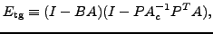
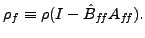
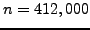

Next: About this document ...
James W. Lottes
Independent quality measures for optimized AMG
Mathematics and Computer Science Division
Argonne National Laboratory
9700 S Cass Avenue
Argonne
IL 60439
jlottes@mcs.anl.gov
We consider the development of an algebraic multigrid (AMG) strategy for
parallel solution of linear systems with target processor counts of
. We are interested in the case of many right-hand sides (e.g., as
arise in the solution of time-dependent PDEs) and are therefore willing to
accept significant set-up costs in favor of reduced solution time per
solve. Presently, we are focusing on the case where the system of interest
is the distributed coarse-grid problem that arises in domain decomposition
methods or in multigrid methods that have relaxed to the coarsest-level
skeleton that covers all processors. Our approach is more general, however,
and we believe it would readily extend to any sparse distributed
symmetric-positive definite system, coarse or fine.
Our selection of an AMG procedure is guided by the two-grid asymptotic
convergence rate, equal to the spectral radius of the error propagation
matrix

where the coarse
operator is defined by
. The iteration is determined by
 , defining the smoother, and by the
prolongation matrix
, defining the smoother, and by the
prolongation matrix  . In classical AMG, the prolongation operator is
further constrained in that the coarse variables are a subset of the
original variables. If we order these last, then
. In classical AMG, the prolongation operator is
further constrained in that the coarse variables are a subset of the
original variables. If we order these last, then  and take the block
forms
and take the block
forms
Thus, we may consider three components to make up a classical AMG procedure:
selection of the coarse variables (coarsening), selection of , and
selection of . We have come up with independent measures of the
quality of each component, guiding our selection of each, which together imply
an efficient method.
- Coarsening. We propose that the coarsening ratio and
the condition number
together measure
the quality of a given coarsening. Here
is the diagonal part of
 . Our simple coarsening scheme is based on Gershgorin discs and provides
a guaranteed bound on
. Our simple coarsening scheme is based on Gershgorin discs and provides
a guaranteed bound on  .
.
- Prolongation weights. We propose that the quality of can be
measured as an energy norm of the departure of from the minimal energy
weights
,
We augment the energy-minimizing interpolation of Wan, Chan, and Smith
with a dynamic procedure for determining the support of based
on a computable estimate of  .
.
- Smoothing. In our forthcoming paper we demonstrate that the
asymptotic convergence rate is determined only by the component of
affecting the F-variables in the hierarchical basis,
We propose that the quality of the smoother can be measured by the asymptotic
convergence rate of the iteration using
to solve equations
governed by
,

We target this measure with a simple diagonal SAI
preconditioner within a Chebyshev polynomial.
The above measures are motivated by the bound, closely related to others in the
literature, on the two-grid asymptotic convergence
rate,
which we prove in
our forthcoming paper, and which immediately explains the latter two
measures. The justification of the coarsening measure is
twofold. First, a small implies that a few steps of diagonal
preconditioning suffices to make small. Second, a small
implies that may be highly sparse and yet be a good approximation to
, thereby inducing a small . This is due to a result
of Demko, that the entries in the inverse of a sparse matrix
(here
) decay exponentially with a rate characterized by the
condition number. Vassilevski was the first to mention the
relevance of this result to multigrid.
Although our solver is still in the development stage, we have had some initial
success in deploying it on the 4096-processor BG/P at Argonne for a coarse-grid
problem of dimension  (originating fine-grid problem of dimension
M). The new solver yields the same outer (fine-grid) iteration count
as that realized with our direct projection-based solver. After
some tuning of the communication kernels the AMG solver is 6.5 times faster
than the original coarse-grid solver, and the overall solution time is reduced
nearly two-fold. We expect further improvements with additional tuning.
Next: About this document ...
Marian
2008-02-26